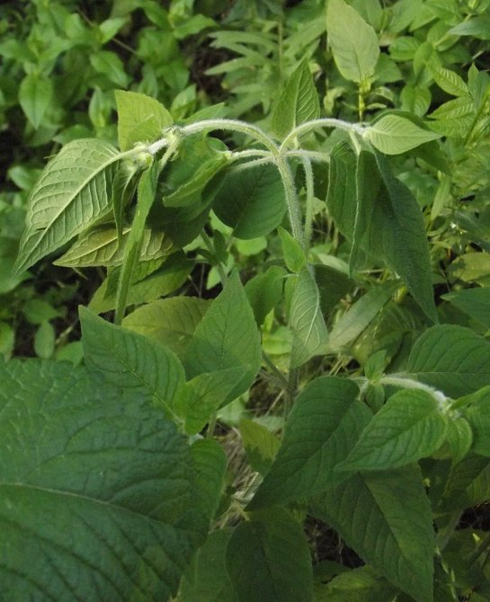
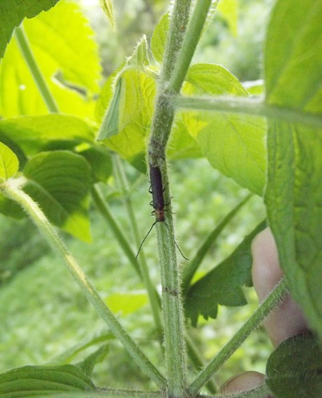
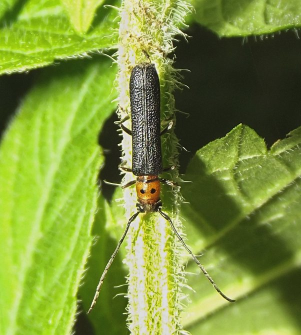
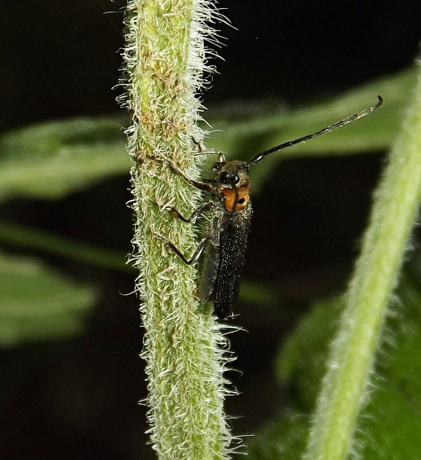
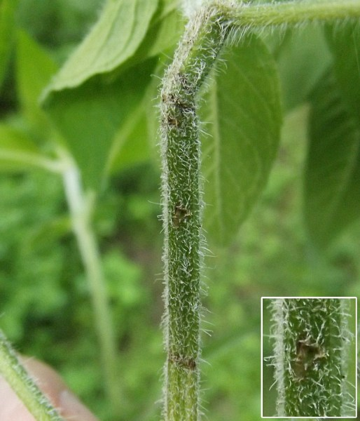

Stem borer (Coleoptera: Cerambycidae) in Blephilia
| Record no.: | 0098 |
|---|---|
| Feeding guild: | Stem borer |
| Taxonomy: | Coleoptera: Cerambycidae: Oberea sp. |
| Stages observed: | egg, adult |
| Distribution observed: | IA |
| Hosts in Blephilia: | B. hirsuta (hairy woodmint) |
I observed and photographed an adult female as she appeared to oviposit into a stem of the host in late June. She chewed three rows of holes or pits that encircled the upper stem and a fourth row several centimeters below these, then gouged out a single shallow pit at a point on the stem between the two girdled areas. She briefly inserted her ovipositor into this lone pit, then flew off. I have not yet observed larvae.
The stem damage and overall appearance of the adult were somewhat similar to those of the Oberea I have reared from Monarda (record 0334).

 Prev
Prev
{kind=link}
{kind=link}

{kind=link}
{kind=link}

{kind=link}
{kind=link}

{kind=link}
{kind=link}

{kind=link}
Page created: February 10, 2026. Last update: June 18, 2026